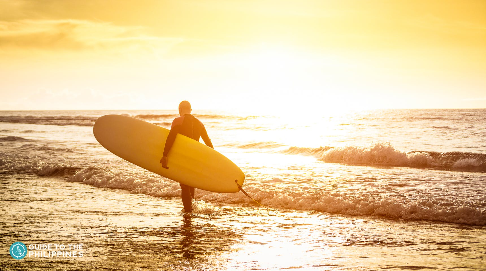
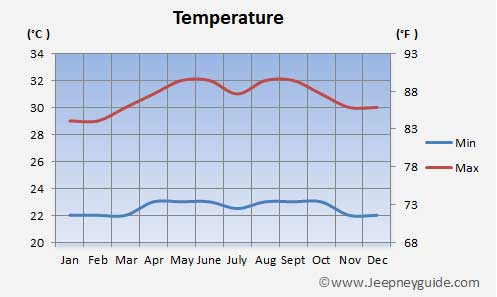

6 Things To Do
When in Siargao
Exploring the top destinations in Siargao is possible if your schedule permits it, but it requires a well-prepared itinerary to make it possible. We recommend at least 4-6 days to pull this off. You can also choose to visit just one or two destinations in Siargao. Here’s a sample itinerary for Siargao that you can take inspiration from:
Sample Itinerary
Day 1: Arrival
- 02:00 PM - Arrival, van to hotel, P300
- 03:00 PM - Check-in, rest, find car rental
+ boat - 07:00 PM - Dinner & beer at Mama’s Grill,
P300 + P20 fare - 08:00 PM - Return to hotel, P20 fare
- 09:00 PM - Sleep!
Day 2: DIY Siargao Land Tour
- 08:30 AM - Car rental, P625 (P2500/4pax)
- 09:00 AM - DIY Land Tour, Total entrance
fees: P100 - 11:30 AM - Lunch, P150
- 12:30 PM - Continue tour
- 02:00 PM - Arrival at Del Carmen,
P30 parking fee - 02:30 PM - Boat to Sugba Lagoon,
P400 (P1,600 fare/4 pax) - 03:30 PM - Sugba Lagoon, P50 entrance fee
- 06:00 PM - Back to hotel, freshen up
- 07:30 PM - Dinner, P150
- 09:30 PM - Back to hotel
Day 3: 3 Islands Tour
- 08:00 AM – Return car, refuel:
P250 (P1000/4 pax) - 09:00 AM — 3 Islands Tour, P400 (P1600/4pax)
- 10:30 AM – Naked Island
- 12:00 PM — Daku Island, P100 entrance fee
- 12:30 PM – Lunch at Daku, P150 +
P75 cottage fee (P300/4) - 02:30 PM — Guyam Island, P30 entrance fee
- 04:30 PM — Back to Boulevard, travel to hotel,
P20 fare - 05:00 PM – Back to hotel, freshen up
- 07:00 PM — Dinner, P150 + P20 fare
- 09:00 PM – Back to hotel
Day 4: Departure
- 05:00 am — Leave for Cloud 9 surf camp,
P20 fare - 05:30 am — Sunrise at the Tower, P50
- 07:00 am – Swimming, FREE!
- 09:00 am — Souvenir run, back to hotel,
P20 fare - 10:00 am – Freshen up, pack up, check out
- 11:00 am — Lunch, P150
- 12:00 pm – Leave for airport,
P300 for van fare - 03:30 pm — Flight out of Siargao
Best Time To Go There

The best time to plan your Siargao trip depends on your purpose: surfing or island or beach lounging. If surfing is your main agenda for traveling to Siargao, then plan your trip sometime between July to November.
These months are the peak surfing season in Siargao. For non-surfers, any time between March to September is ideal. It is sunny, so the waters are clearer.
Climate and Weather
You can expect a warm tropical climate almost all year round in Palawan, except in the rainy season, usually around July to September. The month with the most rainfall is during September. The warmest months are from March to April, with temperatures reaching 33°C. The month with the lowest degrees are from November to February with an average temperature of 23°C but is still dry.
How to Get There?
The province of Palawan and its top destinations are accessible via land, sea, and air travel. Puerto Princesa is often the gateway to the province of Palawan since more flights are going here than to other airports. Your choice of entry point will affect your budget and itinerary, so it's best to look into which place best fits your preferences.
By Flights

Siargao has its own small yet serviceable airport, named Sayak Airport. Traveling by air is the most efficient way to get to the island.
In the past, the usual route (from Manila) is to first take a flight to Cebu City or Surigao City, then take another flight to Siargao. This has changed, however, since Siargao Airport now offers direct flights to and from Manila, as well as Clark and Davao.
From Manila, it usually takes two hours to get to Siargao (one hour if you fly from Cebu). The fare will vary, with the cheapest average at around PHP 3,000 for Cebu Pacific (non-promo) flights.
By Ferry

You can also get to Siargao via Roll-on, Roll-off (RoRo) ferries. These ferries leave to and from Surigao City. The main seaport in the island is located in the municipality of Dapa. Boat and ferry rates vary, between PHP 200-300.